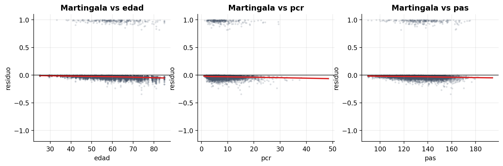

Cohorte de 600 pacientes con artritis reumatoide / espondiloartritis axial · Curso: Modelos de supervivencia
El Biológico A concentra más recaídas (109) que Convencional (77) y Biológico B (68).
Log-rank p = . Las curvas se cruzan: primera pista de que el efecto del tratamiento cambia con el tiempo.
Lectura: cada punto promedia a los pacientes que siguen en el estudio en esa visita. Como PCR, PAS y adherencia cambian, el modelo usa su valor vigente en cada intervalo.
Lectura: perfil base = adherencia baja, tratamiento convencional y sin aumentos. Usa los HR del modelo inicial, que multiplican el riesgo.
Línea sólida: tendencia del coeficiente en el tiempo (LOWESS). Línea punteada: β constante del modelo. Si no son paralelas, el HR cambia.

Lectura:
Mes 12
Con el modelo inicial el HR de A parecía 1.38 y el de B 0.81. Ambos eran promedios engañosos.
Mejora el ajuste: AIC 2929.5 → 2820.4 y LRT = 113.1 (gl = 2, p < 0.001). Los supuestos globales se cumplen (p = 0.19).